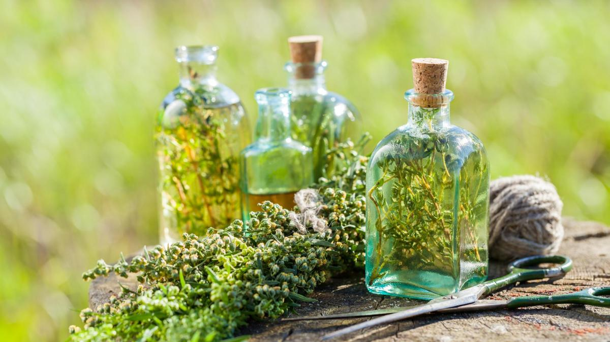

Los orígenes de la coctelería

El origen de los cocteles se remonta la epoca de Alejandro Magno, con el uso de mezclas con licores y hierbas, con fines medicinales. Estas costumbre evolucionaron hacia el siglo XVI, con exponentes como el Bénédictine (combinación secreta de veintisiete plantas y especias, convertidas en un licor homogéneo), creada en el año 1510 en la abadía de Fécamp por el monje Dom Bernardo Vinvelli
InformacionEl nacimiento del cóctel moderno

Sin embargo, la coctelería, según la conocemos hoy dia, se la debemos a Antoine Amédée Peychaud, quien empezó a elaborar bebidas para sus amigos sin fines medicinales. La historia, con tintes de leyenda, le atribuye por tanto también la invención indirecta del término cocktail.
Informacion